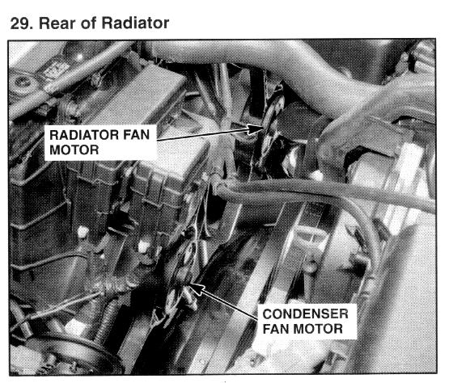

Operation CHARM
: Car repair manuals for everyone.
Home
>>
Acura
>>
1995
>>
Legend Coupe V6-3206cc 3.2L SOHC FI
>>
Repair and Diagnosis
>>
Heating and Air Conditioning
>>
Condenser Fan
>>
Locations
>>
Condenser Fan Motor
Condenser Fan Motor

Rear of Radiator